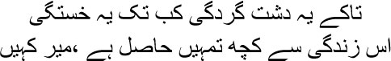
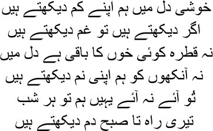

21

How much longer of this vagrant’s life?
Why live like this, why not die?
 ’m telling you what Indra, the king of the Gods, told young Rohit; listen closely. This is about giving up everything and taking your life out to the road. How many people can actually do this? If we can do it even once, Manto bhai, the opaque film before our eyes will be cleared. And then we’ll know the kind of divine sport, the leela, that we’re part of. Yes, let me tell you about Indra, the king of the Gods. ‘Remember,’ he told Rohit, ‘he who cannot leave his home and go out on the road will never find happiness. A prolonged existence within human society turns even good men into sinners. That is why I say, make the road your home; discover your life through travel. The voyager’s feet are like flowers, his soul blooms every day and gives birth to a bounty of fruits. The weariness of the road purges all his sins all the way down to the roots. So, travel, Rohit, do not stop.’
’m telling you what Indra, the king of the Gods, told young Rohit; listen closely. This is about giving up everything and taking your life out to the road. How many people can actually do this? If we can do it even once, Manto bhai, the opaque film before our eyes will be cleared. And then we’ll know the kind of divine sport, the leela, that we’re part of. Yes, let me tell you about Indra, the king of the Gods. ‘Remember,’ he told Rohit, ‘he who cannot leave his home and go out on the road will never find happiness. A prolonged existence within human society turns even good men into sinners. That is why I say, make the road your home; discover your life through travel. The voyager’s feet are like flowers, his soul blooms every day and gives birth to a bounty of fruits. The weariness of the road purges all his sins all the way down to the roots. So, travel, Rohit, do not stop.’
My life was also enriched with fruits and flowers during the three years that I travelled, away from Shahjahanabad. I suffered in no small measure during this time, and swallowed a good deal of humiliation as well. Eventually, I couldn’t even settle the matter of my pension. But still I spent these three years in a wonderful picture gallery. I was a different man when I returned to Dilli; do you know why? Before this, I had blamed other people, even the lord himself, for my misfortunes. But the Ghalib who came back to Dilli after travelling across different lands had realized that you must accept life in whatever manner it comes to you. If you have to die like a worm, die that way, but complaining will not fetch you anything extra.
No, don’t become restive, my brothers, I am going to tell you the tales of my travels now. At times I thought of writing an account of this period in Farsi. But I didn’t get the time. More significantly, after returning to Dilli I was ensnared in so many different webs that my fingers refused to move when I considered writing. But had I been able to write about those days, I could have opened up a new horizon in Farsi prose. Come, let me also taste Mirza’s account of his travels once more with all of you.
The spring of 1827. Mirza Ghalib left Shahjahanabad in search of his fortune. His ancestors used to travel with a company of horsemen, raising a cloud of dust, whirling their swords—the journey of valiant soldiers. And Mirza Ghalib was only going to Calcutta to plead for his pension, accompanied by just two or three servants. He lumbered on, sometimes on horseback, sometimes in a bullock cart. Spend the night at an inn, and if you don’t find one, you must make arrangements to pitch tent by the road and camp right there. The days passed somehow, with the road stretching endlessly before him, but the nights were a mass of black, with no trace of the road visible. How long can you converse with your servants? So you speak to yourself. And you know what talking to yourself means, my brothers. With each of your sentences you will deceive yourself, erecting towers of dreams that will crumble the very next moment.
Mirza fell quite ill when he reached Kanpur. But there was no doctor to be found. So there was no choice but to carry on to Lucknow. Mirza wasn’t keen on visiting Lucknow during this trip, but many of Lucknow’s eminent citizens had requested him to visit their city when they had heard that he was on his way to Calcutta. Mirza was no less attracted by Lucknow. Dilli had long lost its lustre. Whatever was left of Mughal culture was all centred in Lucknow. Poets like Sauda and Mir sahib had long abandoned Dilli for the capital of Awadh. Thinking it over, Mirza decided to pay the city a visit after all. He was bound to receive a gift from the nawab, and he might even earn some money reciting his ghazals at a mushaira or two; all this would help pay for the journey. A palanquin was ordered; Mirza crossed the Ganga in it and arrived in Lucknow.
How can I describe it, my brothers? I do not have words for the Lucknow that he reached. All I can say is that it was the Baghdad of Hindustan. And what can I say of Lucknow by night? You wanted to hold it in your arms every moment. Every night was a night with a new face, nights for staying awake with desire, like the unfinished kisses that remain after every single kiss. Do you know who the finest poet in the city was at the time? Nasikh sahib. He wrote nothing but ghazals. You might just find an echo of Nasikh sahib in my early ghazals. He invited me home. I asked him, ‘Can I not hope to visit the nawab, Nasikh sahib?’
— Those days are gone, mian.
— Meaning? Are you saying that the nawab will not meet me?
— You have to climb several rungs these days before reaching him.
— Such as?
— The nawab’s prime minister, his Wazir-e-Azam, is Motamud-Daulah Agha Mir. The next minister in line is Subhan Ali Khan. You have to earn his pleasure before you can get to Mir sahib. And only when Mir sahib desires it can you appear before the nawab. After all, this isn’t the era of Nawab Asaf-ud-Daulah, who had invited Sauda sahib to his court. Begum Shamsunnisa was a poetess too, a shaira. Do you know what she wrote as a riposte to a ghazal of the nawab’s?
— Tell me, janab.

I see little happiness in my heart
If I find anything at all it’s pain
Not a drop of blood remains in my heart
Nor is there a tear in my eye
Whether you come or not, I will still
Be here every night till I see dawn
— Kyabaat, janab, wonderful! I lost a piece of my heart.
— No one loses a piece of his heart in the times of our Nawab Ghaziuddin Haider, mian.
— Dear God! Still, will you please try? Just in case this poor man gets a chance to earn a little money.
— I know, mian, you have to travel a long way. Let me try. First you have to go to Subhan Ali.
I did succeed in getting an audience with Subhan Ali. I didn’t have enough time to compose a qaseeda for him; I only managed to write an encomium in prose. But you know what, I didn’t enjoy writing qaseedas, but still I had to. To tell the truth, half my life has been wasted writing poetry in praise of nawabs and badshahs and their ministers, Manto bhai. Is a poet born to write verses eulogizing these asses? But what could I do, for the sake of my belly I had to drag my poetry down to the level of garbage. But this cannot be the way of the poet. I knew that I had deviated from the honourable path of poetry. But there’s something you have to observe. Compared to the way in which I poured my heart and soul into the first few lines, by the time I got to the encomium I merely said a few perfunctory things. After reading my prose, Subhan Ali sat grimly, striking up conversations with other people, but not even looking at me.
— Janab.
— Do you have an appeal to make, mian?
— I’d like to pay my respects to the nawab bahadur.
— Pay them here, this is the kingdom of the nawab bahadur.
— Please arrange for a visit to his court, huzoor.
— Let me see what I can do.
— But I have a couple of things to say, janab.
— Now what?
— I am a shair from Shahjahanabad. I hope I will receive the respect due to me at the court. You know very well how the elders look after poets.
— We’ll see …
— And …
— What, there’s more?
— I cannot offer the nawab bahadur a gift. I’ll have to be excused.
Subhan Ali looked at me with round eyes. Then, chewing his paan deliberately, he said, ‘Go back home, mian. How can you expect to meet the nawab bahadur without a gift? Don’t you know the etiquette of a court visit?’
Mirza did not get the opportunity to meet Nawab Ghaziuddin Haider. He had harboured hopes of some sort of reward if only he could have appeared in the nawab’s presence. Subhan Ali poured cold water on those hopes. Still, Mirza stayed on in Lucknow for some time more. The mushaira nights of Lucknow did not turn him away, after all; they revelled in praise of his ghazals, the conversations and discussions helping Mirza realize that even if moribund Delhi did not understand his worth, the heart of Lucknow had responded to his poetry.
And then back on the road. I reached Kashi via Banda and Allahabad. Zulfikar Ali, the nawab of Banda, even contributed to my travelling expenses. I simply could not stand Allahabad, Manto bhai. A wayward city, with no culture to speak of. I was able to take a deep breath only after reaching Kashi. It was an extraordinary city of lights. It felt like the kind of city that I had been trying to reach all this time. Everyone called it Benaras, Benaras, I hated the name, did we have to use that name just because the British did? Call it either Varanasi, or Kashi. The city’s real identity was under the name of Kashi. Renting a house in Naurangabad, I spent about a month in Kashi. If only I could have lived my entire life in this city of the supreme God Maheshwar, I used to tell myself as I sat on the steps of the Dasaswamedh Ghat or the Manikarnika Ghat. I wouldn’t have become a beggar at the mercy of nawabs and badshahs. I wouldn’t have written ghazals. I could have spent the life of an itinerant man, wandering about on the streets of Kashi, listening to the songs of the courtesans, watching the rituals at dawn and dusk, gazing at the Ganga flowing by from the steps of the ghats.
Don’t be annoyed, my brothers, I have to talk about Kashi in some detail. I believe that he who has not seen Kashi even once in his lifetime has not even been born yet. Have you ever been to Kashi, Manto bhai? Never? Then you will certainly be reborn, for only then will you realize that you had actually been born on earth. Your previous life? Oh no, Manto bhai, it was just a dream. Believe me, you haven’t been born yet. Only when you’ve seen Kashi will you know what life and death mean.
You could say Kashi is the entire world. Kashi comprises very pilgrim spot and every drop of sacred water in India—it is the city of light, my brothers. The supreme God Shiva lived here. Kashi was the kind of illumination that makes everything visible. No, don’t expect to see anything spectacular in this light—you will only see everything that exists on this earth clearly. Moreover, only if we die in Kashi are we released from the cycle of rebirth. I learnt so many aspects of Kashi’s greatness; I’m a worm from hell, I have forgotten all of this long ago. But yes, I have not forgotten the story of Manikarnika’s birth, Manto bhai. On the evenings that I didn’t go to the brothels—or even on the evenings that I did—I used to go and sit on the steps of the Manikarnika Ghat. Manikarnika is the spot at which the creation and the destruction of the world have merged. Do you know why? The God Vishnu had created a sacred pool here at the very beginning of time, and here too is situated the great cremation ground, where everything will burn to ashes at the end of time. Do you want to hear how Manikarnika was born, my brothers? Only in our country is it said that even listening to a story of good deeds can mitigate your sins.
There was a time when … no, I’m wrong, time had not even been created. There was only darkness and a torrent of water. There was no sun or moon—where would the stars or planets spring from? There was no such thing as day or night. There was no sound or smell or touch or taste or form—nothing. There was just him, eternal Brahma, who cannot be reached or touched in any way whatsoever. But how long was he to live alone amidst this infinite silence, this impenetrable darkness? So he created a God. This was Shiva. Then Shakti was born from a part of Shiva’s body, she was both nature and illusion. Together they created a piece of land ten miles in length—Kashi. One day, Shiva and Shakti thought of creating one more entity, who would in turn create the earth and look after it as well. That was when Vishnu was born. Shiva and Shakti instructed Vishnu to create the earth and everything on it.
Vishnu began a strict penance. With his Sudarshan Chakra, his divine wheel, he created a lotus pool, which was filled by his own perspiration. Frozen into stone on the bank of the circular pool, he remained sunk in meditation. Five hundred thousand years passed in the twinkling of an eye. Why are you gaping, my brothers? Millions and billions of years were like moments to them. It was extraordinary.
One day, Shiva and Shakti noticed Vishnu as they were passing that way. He was blazing like a flame under the effect of his intense meditation. Shiva told him to ask for a boon, whereupon Vishnu said, I ask for nothing more than your proximity, O Lord. Shiva nodded with such joy at Vishnu’s devotion that the ornament in his ear—the manikarnika—was shaken loose, falling into the water of the pool. ‘So be it,’ Shiva told Vishnu, adding that this circular pool would henceforth be known as Manikarnika, after the ornament in his ear. The ghat beside the pool acquired the same name. It is in the cremation ground next to this ghat that human beings offer their physical bodies to the hands of death, and then ascend to heaven in another body. I used to sit on the steps of Manikarnika Ghat till midnight, Manto bhai, watching the flames licking at one corpse after another. I would hope that, were I to be born again, my body should be burnt on just such a pyre, so that I might merge into space. There were so many stories that I heard from people. One of them said, it is better to be an ass on the roads of Kashi or fly in its skies like a bird than reign as a king elsewhere.
No, my brothers, I haven’t come here only to tell you about death. No account of Kashi can be complete without telling you of what lies on the other side of death, which is desire. Desire is not just for the woman’s body, it exists in music and dance and in the very touch and fragrance of the air, in everything. Our lust and longing have so many stories about them. Kashi’s courtesans were incomparable, Manto bhai, whether you talk of beauty or of the expression of love. I had heard of a courtesan from the times of the Buddha. What she used to charge for a single night was the equivalent of a single day’s taxes paid to the king of Kashi. Alongside death, this was a different Kashi, its desiring body daubed with soothing sandalwood ointment. This Kashi was a woman. Why else would the sage Agastya have been in such a state on leaving Kashi? He had been forced to go away from Kashi to the southern parts of India. Even when he wandered about on the banks of the Godavari, he could not overcome the sorrow of his separation from Kashi. Embracing the northern wind, he would ask, tell me how my Kashi is. It was in Kashi that I wrote for someone:

My heart in turmoil again
is looking for an assassin
Pardon me, Manto bhai, I don’t remember her name, but the dagger was wedged in my heart till the day I was buried. She told me so many stories; to tell the truth, I used to visit her for her fragrance and her stories, not to sleep with her. She told me about the epic poem Kuttaneemat. Have you heard of Damodar Gupta? He was the prime minister to Jayapirh, the king of Kashmir. He wrote Kuttaneemat during his advanced years. The oldest of the sexual manuals after Vatsayana’s Kamasutra. The story in this poem is set in Kashi. What sort of a city was it? Pardon me, my brothers, it is impossible to describe this city in our mangy tongue. Imagine Damodar Gupta amidst us today, describing the beauty of Varanasi and her ladies of the night. Now hear it in his own words:
— All hail Madandeva, the lord and master of the desire that is gathered in the glance from the corner of the eye of a woman reddened by passion, the desire that makes Madan eager to kiss the lotus mouth of his wife Rati repeatedly like the bee.
Enriched by an abundance of wealth and beauty, the jewel of the entire world, Varanasi is luminous with a gathering of sages who have acquired knowledge of God. The majesty of this city is so resplendent in tradition that, although its citizens are addicted to partaking of the fruits of prosperity, it is not impossible for them to attain the company of Mahadeva, arraigned against the backdrop of the moon in all the glory of his matted locks. The ladies of the night of the city of Varanasi are bedecked in a profusion of gold ornaments. They are affluent and always spend their time in the company of a multitude of suitors. Their bodies are as tender and beautiful as that of Pashupati, the lord of all creatures. The painted flags fluttering atop the sky-kissing pinnacles of the temples to the Gods make the heavens as beautiful as flower gardens. Wandering hither and thither, the ladies of the night have turned the earth sanguine with the scarlet imprint of the soles of their feet. The ground appears to be covered with lilies. The air rings with the tinkling sounds of their ornaments, distracting students from their lessons, forcing lapses in concentration that their teachers are unable to rectify.
Just as the city of Amravati in heaven, inhabited by Gods and Goddesses, is adorned by the pomp and grandeur of the Nandanvan and served by numerous soldiers of the Gods, so too is the city of Varanasi occupied by many cultured individuals, and, gratified by the service of the flowing Ganga, it reigns like another Amravati in the middle of the world made by the creator of the universe.
Now Damodar Gupta speaks of Malati. Listen closely, my brothers, for we lost this epic a long, long time ago.
— In this selfsame Varanasi there lived a lady of the night named Malati. Just like the enviable physical prowess of Kamdeva, Malati was the name of the most enviable ornament of the sisterhood of prostitutes. Just as female snakes in their pits are overcome by sorrow at the sight of the Garuda, so too are luxuriant harlots overcome by jealousy at the sight of Malati. She proved irresistible to the hearts of the wealthiest among men in the same way that Parvati, daughter of Himalaya, had proved irresistible to the heart of Mahadeva, the God of the Gods. As the Mandar mountain was bound by the coils of the Sheshanaga after the churning of the ocean, so too were the eyes of the sensual constantly bound to Malati. Like the demon Andhakasura poised at the tip of Shiva’s trident, Malati too was positioned at the top of all the ladies of the night. She was soft-spoken, playful, loving, partial to humour, and adept at conversation. One day, as Malati was walking around on her terrace, she heard a song:
Discard now, o temptress,
Your beauty and maddening youth
Learn, instead, with care the art
Of stealing the lustful heart
Malati told herself, ‘The singer is advising me as a friend should. I must now seek the counsel of Bikarala, who is experienced in all the matters of the world, in whose home amorous men spend all their hours.’
Do you know who Bikarala was, Manto bhai? She was an aged whore. Her teeth had fallen, her skin was sagging, her breasts had shrivelled, and she had only a few hairs left, all white. But all the whores surrounded her. Why? For advice on how to select a worthy man, on how to steal his heart. When I heard this, I felt as though all living lust and desire had arrived at the door of death; only death could instruct them how to get pleasure from life. And so even a prostitute like Malati had to go to Bikarala.
Kothas to indulge sexual desire on one side, the Manikarnika Ghat of death on the other—only Kashi could wear both of these together. I heard an unusual qissa about the sage Narada. This was a story about mystic agony; a story where several lives seemed to have passed in a dream. Lust and desire and death are all mingled here. You won’t understand mystic agony, my brothers, unless I tell you the story about Narada. One day Brahma instructed Narada to take a dip in the Ganga. As soon as he emerged from the water, do you know what he saw? A wondrously beautiful woman. They were married; they had children, grandchildren too. Then one day, there was a pitched battle between the father and the husband of the woman. Both of them died in the battle, as did several of the woman’s children. The woman joined her husband on his pyre to die alongside him. The flames were lit, but how strangely cold it was inside, as though she were standing under water. Narada saw that he had only just emerged from the river. Had all this happened in such a short time? This is the miracle of Kashi, Manto bhai. Do you know what Mahadeva, the God of Gods, told his consort Parvati? The joy I experience in Kashi cannot be derived from any yogi’s heart, Parvati, not even from Mount Kailash or Mount Mandar. There are only two eternal forms in this world that I love, Parvati. You, my Parvati, my Gauri, who is the mistress of all the arts; and this Kashi. There is no other place for me besides Kashi. In Kashi is my happiness, in Kashi is my exile. We will live in Kashi eternally.
I had no wish to depart from this city of lights. But I was travelling to make an appeal for my pension, I had to go to Calcutta. How else was I to earn a living? Those faces in the haveli at Shahjahanabad were all looking to me for survival. And then there were the creditors. I could easily have stayed on in Kashi. But the creditors would have put my family out on the street. I may not have loved Umrao Begum, but I could not allow her honour to be ground in the dust. Meanwhile, the lovely woman from the brothel at Kashi wouldn’t let me go either, telling me repeatedly, stay here, mian, I will happily spend my entire life with you. But who would give me money in Kashi, Manto bhai? I knew only too well that love always ran out when money did. Even the woman who was full of love for me would not hesitate to kick me out when I became a pauper. I bid farewell to Kashi with the memory of only one person. I’m very sleepy today, my brothers, I will tell you about him another time. How can I tell you about Sant Kabir in just a few words? Just like Kashi, he has been living eternally. I could not have met him otherwise.